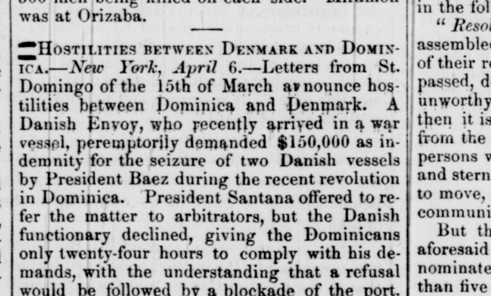
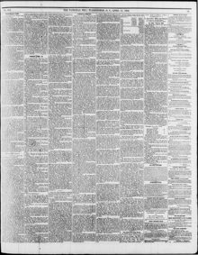

President Santana offered to refer the matter to arbitrators, but the Danish functionary declinedEl presidente Santana se ofreció a remitir el asunto a árbitros, pero el funcionario danés
The National Era. Washington [D.C.], April 14, 1859. Page 3. Published by L.P. Noble. A weekly newspaper, 1847–1860.The National Era. Washington [D.C.], 14 de abril de 1859. Página 3. Publicado por L.P. Noble. Periódico semanal, 1847–1860. View the originalVer el original


See the full pageVer la página completaA Danish envoy who had recently arrived in a war vessel peremptorily demanded 150,000 dollars as indemnity for the seizure of two Danish vessels by President Baez during the recent revolution, refusing President Santana's offer to refer the matter to arbitrators and giving the Dominicans only twenty-four hours to comply, on the understanding that refusal would be followed by a blockade of the port. The Dominicans decided in favor of war and began manning their batteries, while private advices added that the French commander and authorities in port had previously demanded a concession of all the gold, silver and copper mines of the Dominican Republic.Un enviado danés que había llegado recientemente en un buque de guerra exigió perentoriamente 150.000 dólares como indemnización por la incautación de dos buques daneses por el presidente Báez durante la revolución reciente, rechazó la oferta del presidente Santana de someter el asunto a árbitros y dio a los dominicanos solo veinticuatro horas para cumplir, con la advertencia de que la negativa sería seguida por un bloqueo del puerto. Los dominicanos se decidieron por la guerra y comenzaron a dotar sus baterías, mientras informes privados añadían que el comandante francés y las autoridades en el puerto habían exigido antes una concesión de todas las minas de oro, plata y cobre de la República Dominicana.
FULL TEXT:TEXTO COMPLETO:
HOSTILITIES BETWEEN DENMARK AND DOMINICA.—New York, April 6.—Letters from St. Domingo of the 15th of March announce hostilities between Dominica and Denmark. A Danish Envoy, who recently arrived in a war vessel, peremptorily demanded $150,000 as indemnity for the seizure of two Danish vessels by President Baez during the recent revolution in Dominica. President Santana offered to refer the matter to arbitrators, but the Danish functionary declined, giving the Dominicans only twenty-four hours to comply with his demands, with the understanding that a refusal would be followed by a blockade of the port.HOSTILIDADES ENTRE DINAMARCA Y DOMINICA. —Nueva York, 6 de abril. —Cartas de Santo Domingo del 15 de marzo anuncian hostilidades entre Dominica y Dinamarca. Un Enviado Danés, que recientemente llegó en un buque de guerra, demandó perentoriamente $150,000 como indemnización por la captura de dos buques daneses por el Presidente Báez durante la revolución reciente en Dominica. El Presidente Santana ofreció referir el asunto a árbitros, pero el funcionario danés declinó, dando a los dominicanos solo veinticuatro horas para cumplir con sus demandas, con el entendimiento de que una negativa sería seguida por un bloqueo del puerto.